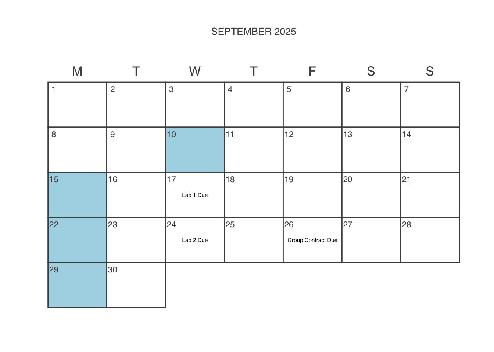
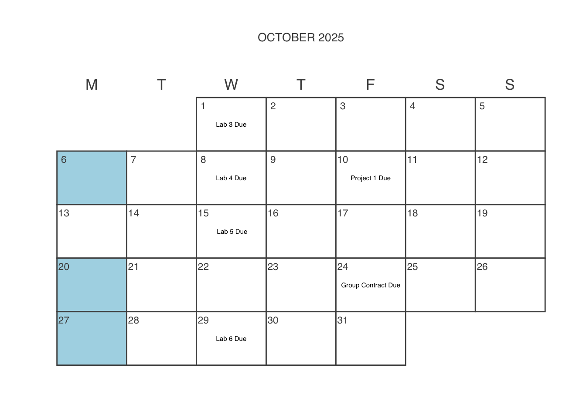
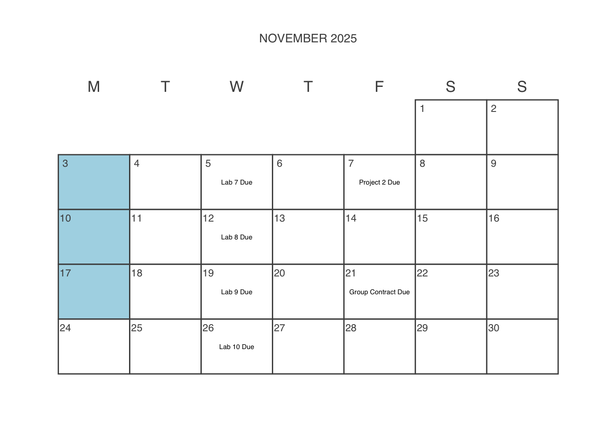
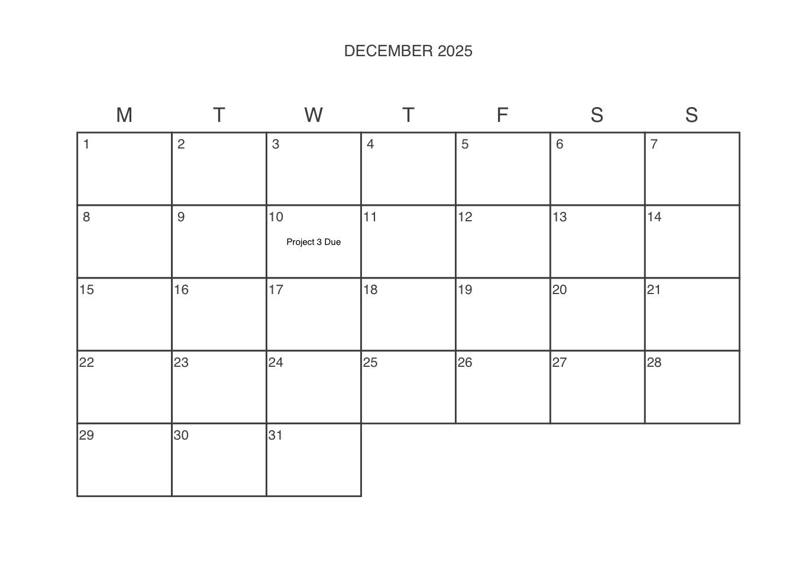
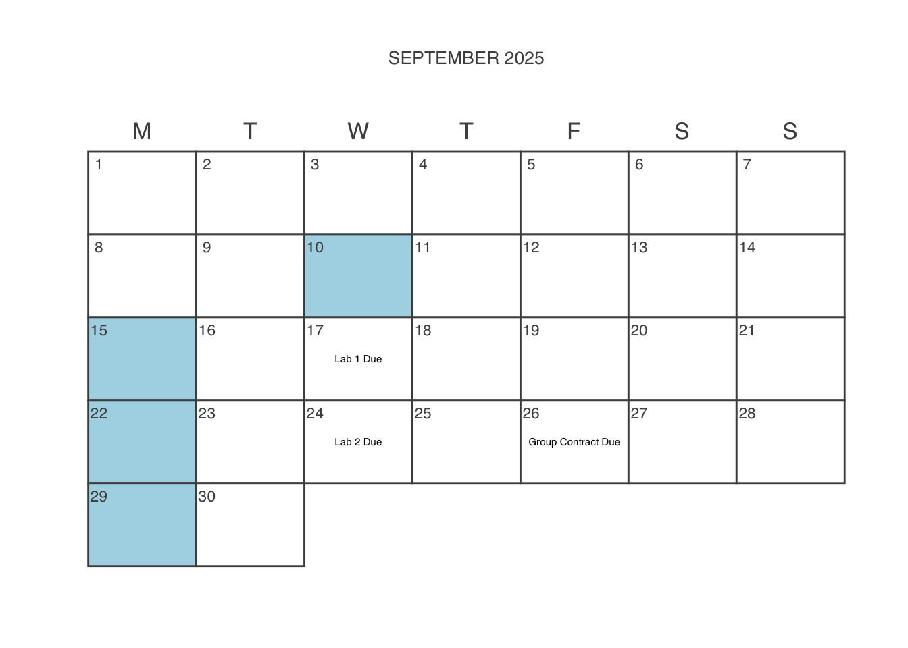
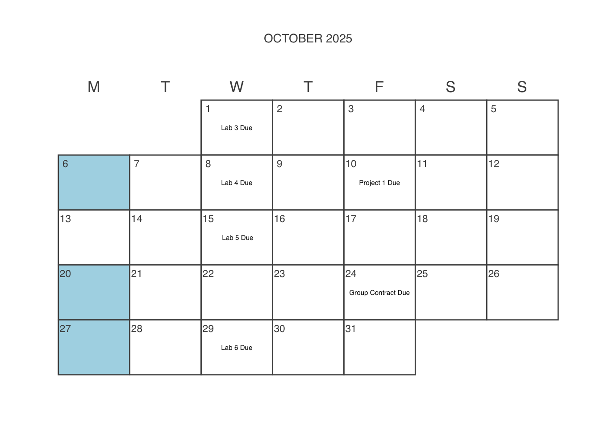
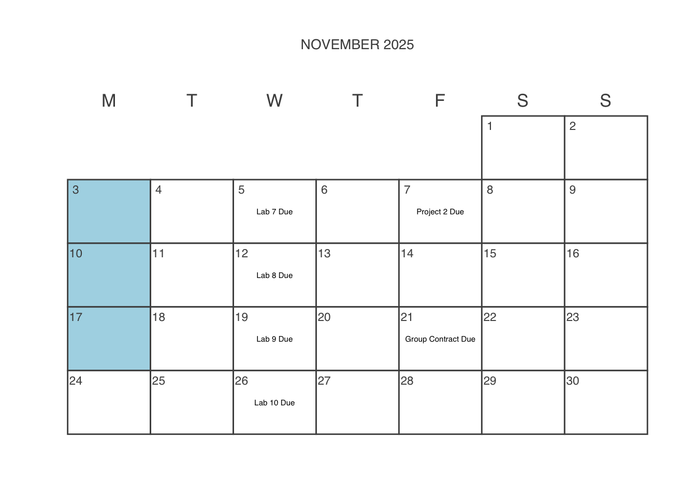
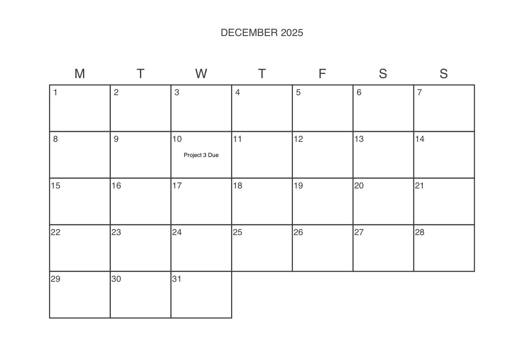

Styling and infrastructure for this page inspired by related syllabi produced by Ben Baumer and R. Jordan Crouser.
All readings for this course will be available in our course Perusall, which is linked in Moodle. I encourage you to complete the readings there so that you can leave comments and questions as they come up.




Fill out First Day of Class Questionnaire in Moodle
Contact me if you will be using a Chromebook
Create a GitHub account if you don’t have one
Accept SDS 192 Labs Assignment
Getting Started , Ismay, Chester and Albert Y. Kim (2021). Modern Dive: Statistical Inference via Data Science. CRC Press. (Visited on Jan. 14, 2022). Read in Perusall
Complete Syllabus Quiz in Perusall
2. Data Visualization , Baumer, Benjamin S., Daniel T. Kaplan, and Nicholas J. Horton (2021). Modern Data Science with R. 2nd. CRC Press. (Visited on Jan. 14, 2022). Read in Perusall
[ggplot2 cheatsheet](https://www.maths.usyd.edu.au/u/UG/SM/STAT3022/r/current/Misc/data-visualization-2.1.pdf
Lab 1 Due
[ggplot2 cheatsheet](https://www.maths.usyd.edu.au/u/UG/SM/STAT3022/r/current/Misc/data-visualization-2.1.pdf
[ggplot2 cheatsheet](https://www.maths.usyd.edu.au/u/UG/SM/STAT3022/r/current/Misc/data-visualization-2.1.pdf
Lab 2 Instructions
2. Data Visualization , Ismay, Chester and Albert Y. Kim (2021). Modern Dive: Statistical Inference via Data Science. CRC Press. (Visited on Jan. 14, 2022). Read in Perusall
Project 1 Assigned
Lab 2 Due
[ggplot2 cheatsheet](https://www.maths.usyd.edu.au/u/UG/SM/STAT3022/r/current/Misc/data-visualization-2.1.pdf
Group Contract Due
[ggplot2 cheatsheet](https://www.maths.usyd.edu.au/u/UG/SM/STAT3022/r/current/Misc/data-visualization-2.1.pdf
Bryan, Jennifer (2018). “Excuse Me, Do You Have a Moment to Talk About Version Control?†In: The American Statistician 72.1. Publisher: Taylor & Francis _eprint: https://doi.org/10.1080/00031305.2017.1399928, pp. 20-27. (Visited on Jan. 14, 2022). Read in Perusall
[ggplot2 cheatsheet](https://www.maths.usyd.edu.au/u/UG/SM/STAT3022/r/current/Misc/data-visualization-2.1.pdf
[Lab 3 Instructions]
[Lab 3] Due
3. Data Wrangling , Ismay, Chester and Albert Y. Kim (2021). Modern Dive: Statistical Inference via Data Science. CRC Press. (Visited on Jan. 14, 2022). Read in Perusall
Project 1 Due
Lab 5 Due
Self-Scheduled Mid-Term Exams
5. Data wrangling on multiple tables , Baumer, Benjamin S., Daniel T. Kaplan, and Nicholas J. Horton (2021). Modern Data Science with R. 2nd. CRC Press. (Visited on Jan. 14, 2022). Read in Perusall
Project 2 Assigned
Watch Project Intro Video in Perusall
Group Contract Due
6. Tidy Data , Baumer, Benjamin S., Daniel T. Kaplan, and Nicholas J. Horton (2021). Modern Data Science with R. 2nd. CRC Press. (Visited on Jan. 14, 2022). Read in Perusall
26. Parsing dates and times , list() Read in Perusall
7. Iteration , Baumer, Benjamin S., Daniel T. Kaplan, and Nicholas J. Horton (2021). Modern Data Science with R. 2nd. CRC Press. (Visited on Jan. 14, 2022). Read in Perusall
Project 2 Due
17. Working with geospatial data (17.1-17.3) , Baumer, Benjamin S., Daniel T. Kaplan, and Nicholas J. Horton (2021). Modern Data Science with R. 2nd. CRC Press. (Visited on Jan. 14, 2022). Read in Perusall
17. Working with geospatial data (17.4-17.8) , Baumer, Benjamin S., Daniel T. Kaplan, and Nicholas J. Horton (2021). Modern Data Science with R. 2nd. CRC Press. (Visited on Jan. 14, 2022). Read in Perusall
Project 3 Assigned
MP3 Template Your team name should be a string with your team members’ last names.
Group Contract Due
Project 3 Due